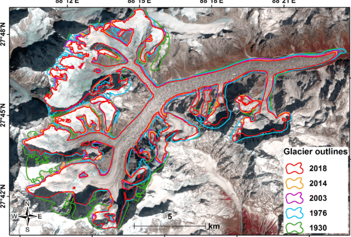

Zemu Glacier Monitoring Dashboard
Track key environmental metrics of the Zemu Glacier.
Lake Size
12
km²
Temperature
-8
°C
Water Level
Low
Dam Stability
Moderate
Check Warning
Location of Zemu Glacier

Lake Size Over Time
Temperature Over Time
Water Level Over Time